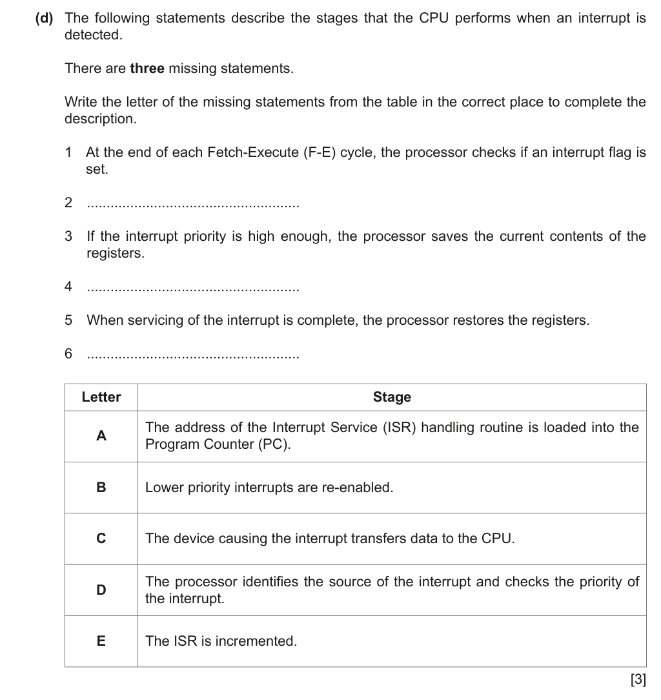
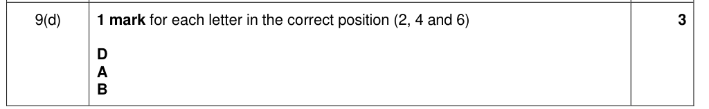
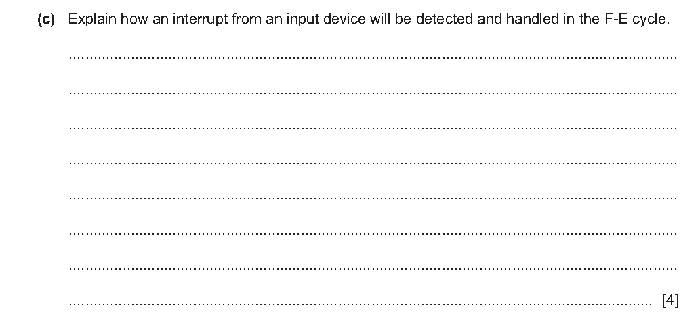
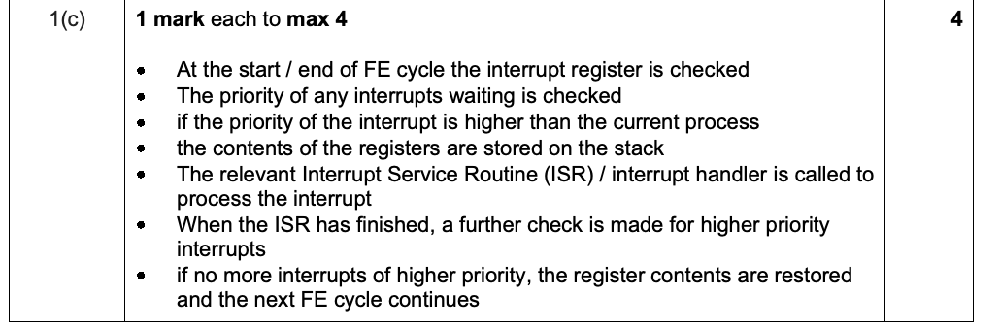

The source can be hardware or software. An interrupt handler is selected according to the cause.
An external device may raise a request while another instruction is executing. A program can deliberately invoke an operating-system service. A fault such as division by zero is synchronous with its instruction and may need different recovery.
4.1.16
Apply interrupts to devices and multitasking
A USB keyboard is connected
Attach a keyboardStep 0 / 3
A USB hub detects the change at its port and reports it to the host controller.
Hardware reports the event. The handler and operating system complete the appropriate service and choose which task runs next.
Follow the port-change notification from the host controller through device discovery to usable input.
A storage transfer completes
Start an I/O requestStep 0 / 3
A task requests a block read. While the device works, the CPU can run another task.
Hardware reports the event. The handler and operating system complete the appropriate service and choose which task runs next.
While data moves, the CPU can run another task. The completion event lets the waiting task become ready.
A timer gives another task its turn
Run task AStep 0 / 3
Task A uses its current time slice. A hardware timer counts toward expiry.
Hardware reports the event. The handler and operating system complete the appropriate service and choose which task runs next.
See when a timer request leads the operating system to save task A and schedule task B.
4.1.17
Handle an interrupt at an instruction boundary
An interrupt arrives during ADD 5
Main program is about to addStep 0 / 9
ACC=18. The next instruction is ADD 5. Step forward to see the scheduled request arrive during execution.
Enabled requests of sufficient priority are accepted only at an instruction boundary in this model. The example saves PC, ACC and the status flags; a real context includes whatever other state the ISR may change. ISR address 200 and its service steps are illustrative.
Changing a setting restarts this experiment. Predict the change before stepping again.
Watch the request become pending before the addition finishes. Then follow the saved PC, ACC and zero flag through the interrupt service routine (ISR) and back to STO 6.
Recognise the request, service it and return
Moment
State and decision
Request arrives during the instruction
The CPU is executing ADD 5 at address 1. ACC holds 18 and memory address 5 holds 24. Keyboard data becomes ready while the addition is in progress.
Boundary before the next fetch
ADD has finished. ACC now holds 42 and PC points to STO 6 at address 2. Check the pending request, enabled state and priority. A request that cannot yet be accepted remains pending.
Service begins
Save the interrupted context on the stack. Identify the source and load the appropriate ISR address into PC.
Service ends
Acknowledge the event, restore the saved registers and flags, and resume at the next instruction. In the example PC = 2 and ACC = 42.
Cambridge 9618/11, May/June 2022, Q6(a)(ii) accepts the boundary at the end of the current fetch-execute cycle or the start of the next.
Cambridge 9618/13 · October/November 2023 · 9(d) · 3 marks
Selected parts: 9(d) [3].

Official question · 9618_w23_qp_13.pdf · PDF p15 · Open full-size extract ↗Reading the question — teacher guidance
Read the fixed stages first. Identify the decision before context is saved, the action that starts the handler, and the action after registers have been restored.
Solution / model answer — teacher-written
Gap
Letter
Why it fits here
2
D
Identify the source and check its priority before deciding whether to service it.
4
A
Load the ISR start address into PC so that the next fetch enters the handler.
6
B
With the interrupted state restored, enable lower-priority requests again.
Official mark scheme

Official mark scheme · 9618_w23_ms_13.pdf · PDF p10 · Open full-size extract ↗Why this earns marks — teacher explanation
The official scheme awards one mark per letter in its correct position. The order is D, A, B.
Common mistakes — teacher analysis
An ISR is a routine in memory. Loading its start address into PC initiates the transfer of control.
3. Explain interrupt detection, service and return
Cambridge 9618/12 · May/June 2025 · 1(c) · 4 marks
Selected parts: 1(c) [4].

Official question · 9618_s25_qp_12.pdf · PDF p3 · Open full-size extract ↗Reading the question — teacher guidance
Include both detection at a cycle boundary and the handling sequence. Saving context has a purpose: the interrupted program must resume correctly.
Solution / model answer — teacher-written
At the start or end of the fetch-execute cycle, the processor checks the interrupt register for pending requests and their priorities. If a request is to be serviced at a higher priority than the current process, the current register contents are saved on the stack. The appropriate interrupt service routine handles the device request. After it finishes, pending higher-priority requests are checked; when none requires service first, the saved registers are restored and the interrupted program continues with its next fetch-execute cycle.
Official mark scheme

Official mark scheme · 9618_s25_ms_12.pdf · PDF p4 · Open full-size extract ↗Why this earns marks — teacher explanation
The official scheme lists several points but caps the answer at four marks. A complete explanation may include more than four connected steps; those steps are not four extra marks. It accepts the stated start/end cycle-boundary check.
Common mistakes — teacher analysis
Jumping to an ISR without saving the program state can destroy values needed on return. “Start the program again” is different from resuming its saved state.
Additional teacher-written practiceQuestion 1 · Command word: Explain4 teacher marks
Explain the purpose of interrupts using a printer that signals completion while the processor runs another program. Compare this with repeatedly checking the printer's status.
S4.08.A01S4.08.A02S4.08.A03
Answer and checking points — teacher-written
The printer generates a request when its current operation finishes.
The processor can perform other work between printer events.
The request causes the relevant event-handling code to run when it is accepted.
Repeated status checking uses processor time even when the printer has nothing new to report.
Common error: An interrupt request does not mean the printer executes the processor's handler itself.
Question 2 · Command word: Describe5 teacher marks
Describe how an enabled interrupt is detected and handled after an instruction finishes. Include the ISR, saved processor state and return to the interrupted program.
S4.08.A04S4.08.A05S4.08.A06
Answer and checking points — teacher-written
At the end of the fetch-execute cycle the processor checks for pending, enabled interrupts.
If a request is accepted, the return address and required processor state are saved.
The processor obtains the appropriate Interrupt Service Routine (ISR) address and transfers control to it.
The ISR services the event and acknowledges or clears the request as required.
The saved state is restored and execution resumes at the saved return address.
Common error: Returning requires restored state; restarting the interrupted program would lose its progress.
Question 3 · Command word: Explain4 teacher marks
An accepted interrupt saves PC=330, ACC=18, IX=4 and comparison=True. The ISR leaves ACC=65, IX=0 and comparison=False. The next program instruction at 330 is ADD #2. Explain the required restoration and state the result after that instruction. A lower-priority enabled request remains pending; explain why that does not mean it was lost.
S4.08.A04S4.08.A05S4.08.A06
Answer and checking points — teacher-written
Restore PC=330, ACC=18, IX=4 and the saved comparison state.
ADD #2 gives ACC=20 and next PC=331 in the one-location model.
Keeping the ISR’s ACC would wrongly produce 67; returning to the address alone is insufficient.
The retained lower-priority request waits for an eligible interrupt check and can then be serviced.
Common error: Separate saved context from the ISR’s working registers.
Question 4 · Command word: Identify3 teacher marks
Identify an interrupt cause for each situation and explain its use: a time slice expires, a temperature alarm is raised, and a program requests an operating-system service.
S4.08.A02S4.08.A03
Answer and checking points — teacher-written
A timer interrupt lets the operating system regain control for scheduling.
A hardware interrupt from the alarm interface requests timely handling of the temperature event.
A software interrupt can request an operating-system service from the running program.
Common error: Hardware events, timing events and software requests are different interrupt sources.